Superpowers Game Development Series #5
SUPER PACMAN
Chapter 3 : Setting the assets
Note : For this chapter concerning assets you can download the sources assets here and continue the tutorial with them or you can decide to do your own assets from scratch but you should be careful to check than your sprite are the same sizes and placements than the originals to avoid too much change in the code and settings thereafter.
Settings for assets
We have now the structure of our game but the assets are empty, we are going to load each asset file and set them ready to be used in the game scenes.
One decision we need to take in the beginning is the size of our game screen, we decide than one unit will be 16 pixels and the screen will 24 units width and 32 units height. Which is the same to say than our screen will be 384 width x 512 height with a screen ratio of 3 x 4 in the General settings. As we build our levels, we will think with the units, 1 unit = 1 tile = 16x16pixels.
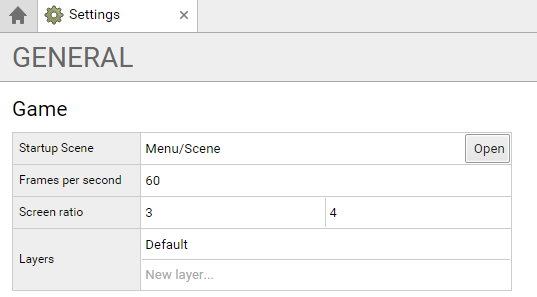
Menu assets
We load for each sprite asset the image file related and we set the grids, here the settings for each sprite of the menu folder.
- Menu
- Screens
- Start, file : menu/startscreen.png, grid size : 600x800, origin : 0x0, pixel/unit : 16
- Levels, file : menu/levelscreen.png, grid size : 600x800, origin : 0x0, pixel/unit : 16
- End, file : menu/endscreen.png, grid size : 600x800, origin : 0x0, pixel/unit : 16
- Buttons
- Buttons, file : menu/buttons.png, grid size : 258x60, origin : 50x50, pixel/unit : 16
- Levels, file : menu/levels.png, grid size : 156x184, origin : 50x50, pixel/unit : 16
- Screens
Note : we change the frames/second to 1 because to slow in maximum the static animation.
Start screen
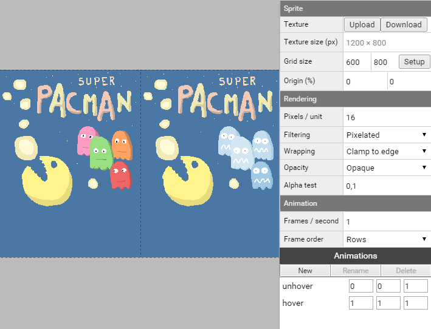
For the Start screen we create two animations, hover and unhover, with the first and second frames, it is static animations with only one frame each.
- unhover with the start and end frame to 0
- hover with the start and end frame to 1
End screen
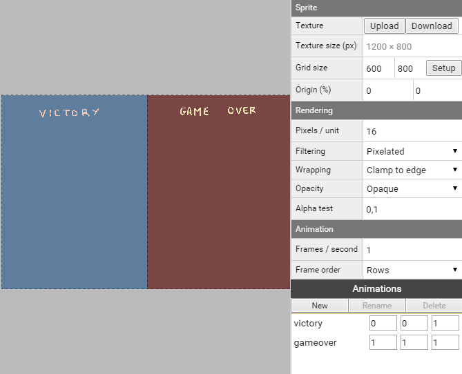
For the End screen we create two animations, victory and gameover, with the first and second frames, it is also static animations with only one frame each.
- victory with the start and end frame to 0
- gameover with the start and end frame to 1
Buttons
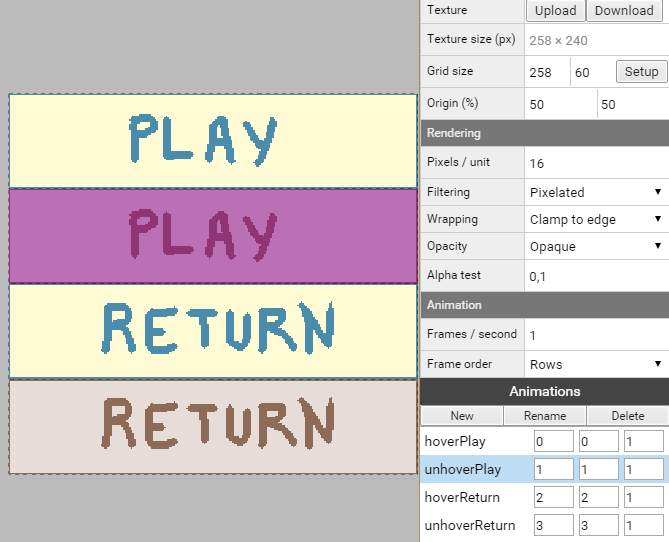
For the buttons we create fours animations for the fours frames.
- hoverPlay with the start and end frame to 0
- unhoverPlay with the start and end frame to 1
- hoverReturn with the start and end frame to 2
- unhoverReturn with the start and end frame to 3
Levels buttons
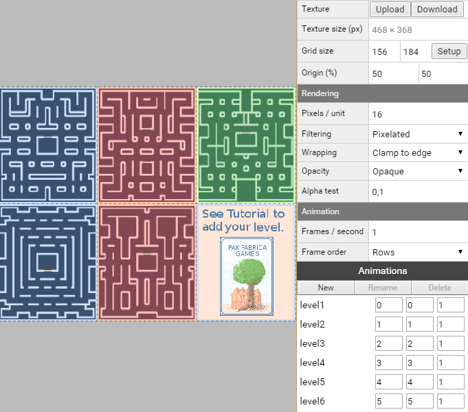
For the levels buttons we create six animations for the six frames.
- level1 with the start and end frame to 0
- level2 with the start and end frame to 1
- level3 with the start and end frame to 2
- level4 with the start and end frame to 3
- level5 with the start and end frame to 4
- level6 with the start and end frame to 5
Levels assets
We will see in the next chapter the level design part of our game, for now, we simply add the Tile Set sprite.
- Levels
- Tile Set, file : tileset.png, grid : 16x16px
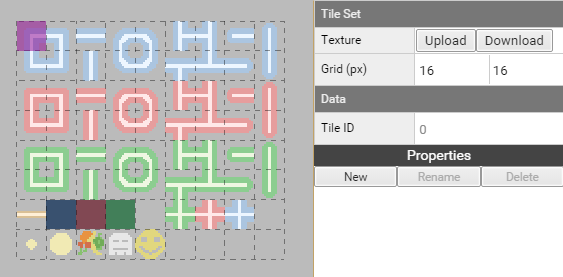
Pacman assets
We load the pacman sprite and set the differents animations :
- Pacman
- Move, file : pacman/move.png, grid size : 16x16, origin : 0x0, pixel/unit : 16
- Life, file : pacman/life.png, grid size : 16x16, origin : 0x0, pixel/unit : 16
- Death, file : pacman/death.png, grid size : 16x16, origin : 0x0, pixel/unit : 16
Move animation
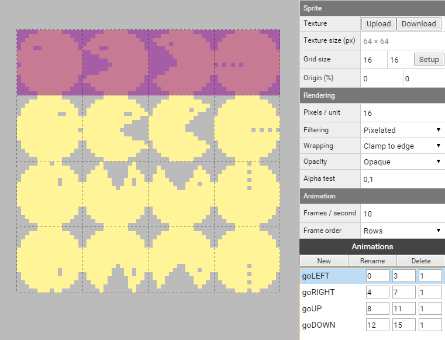
For the move animations, we set four animations with 4 frames each.
- goLEFT with the start frame at 0 and end frame to 3
- goRIGHT with the start frame at 4 and end frame to 7
- goUP with the start frame at 8 and end frame to 11
- goDOWN with the start frame at 12 and end frame to 15
Life sprites
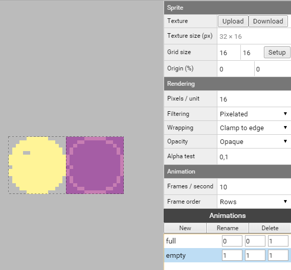
We set two static animations, one for each frame.
- full with the start and end frame to 0
- empty with the start and end frame to 1
Death animation
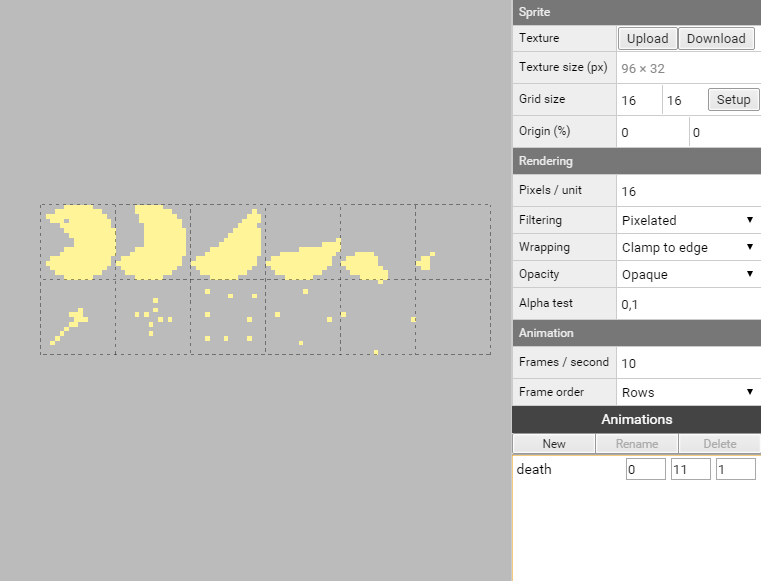
Only one death animation with all the frames of the sprite.
- death with the start frame at 0 and end frame to 11
Ghosts assets
The four ghosts have the sames parameters, so we could delete all ghosts assets and start a new one ghost1, set it and duplicate it 3 times with differents sprite file.
- Ghosts
- ghost1, file : ghosts/ghost1.png, grid size : 16x16, origin : 0x0, pixel/unit : 16
- ghost2, file : ghosts/ghost2.png, grid size : 16x16, origin : 0x0, pixel/unit : 16
- ghost3, file : ghosts/ghost3.png, grid size : 16x16, origin : 0x0, pixel/unit : 16
- ghost4, file : ghosts/ghost4.png, grid size : 16x16, origin : 0x0, pixel/unit : 16
- vulnerable, file: ghosts/vulnerable.png, grid size : 16x16, origin : 0x0, pixel/unit : 16
move animation
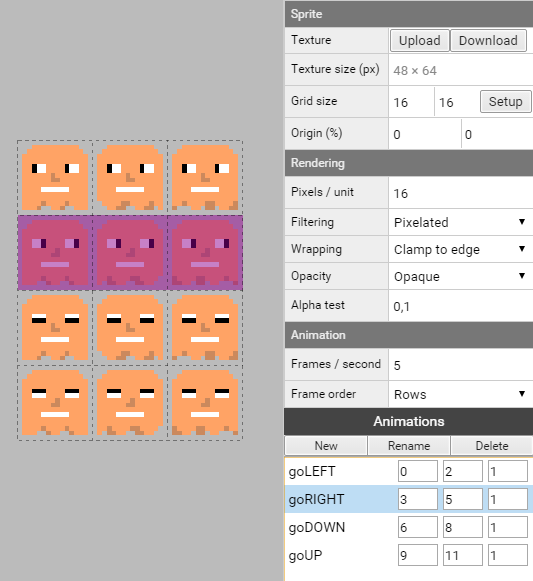
We set four animations with 3 frames each for the four directions, and we do that 4 times for each ghost (or we do it for one and duplicate it 3 times).
Note : we change the frames/second to 5, to make the animation slower.
- goLEFT with the start frame at 0 and end frame to 2
- goRIGHT with the start frame at 3 and end frame to 5
- goDOWN with the start frame at 6 and end frame to 8
- goUP with the start frame at 9 and end frame to 11
vulnerable animation
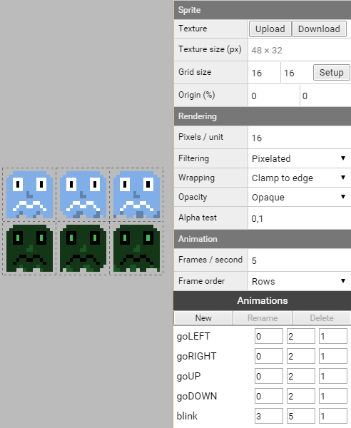
This sprite is used when the player eat a big coin, it is then possible to eat the ghost, after a time, the ghost start to blink and can eat the player again.
We set four animations with the same 3 frames for the four directions. The fifth animation is the ghost blinking before coming back to normal.
Note : we change the frames/second to 5, to make the animation slower.
- goLEFT with the start frame at 0 and end frame to 2
- goRIGHT with the start frame at 0 and end frame to 2
- goDOWN with the start frame at 0 and end frame to 2
- goUP with the start frame at 0 and end frame to 2
- blink with the start frame at 3 and end frame to 5
Items assets
We add sprite for the small coin, big coin and for the fruits.
- Items
- Coins
- Small, grid size : 16x16, origin : 0x0, pixel/unit : 16
- Big, grid size : 16x16, origin : 0x0, pixel/unit : 16
- Fruits
- Sprite, grid size : 16x16, origin : 0x0, pixel/unit : 16
- Coins
Fruits sprites
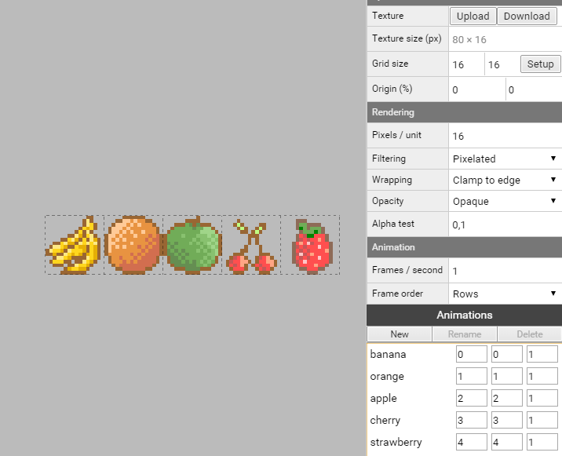
We create static animation to separate each fruit from the Sprite :
Note : we change the frames/second to 1 because to slow in maximum the static animation.
- banana with the start and end frame to 0
- orange with the start and end frame to 1
- apple with the start and end frame to 2
- cherry with the start and end frame to 3
- strawberry with the start and end frame to 4
Sounds assets
For each sound we load the mp3 file related :
- Sounds
- Music, file : sounds/music.mp3
- MenuButton, file : sounds/menu.mp3
- EatCoin, file : sounds/eatcoin.mp3
- EatGhost, file : sounds/eatghost.mp3
- EatFruit, file : sounds/eatfruit.mp3
- PacmanDeath, file : sounds/pacmandeath.mp3
Font asset
We load the bitmap font with a grid of 20x20 and a pixel/unit of 20.
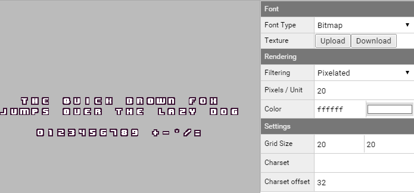
We can download the superpowers project v3 from this chapter here.